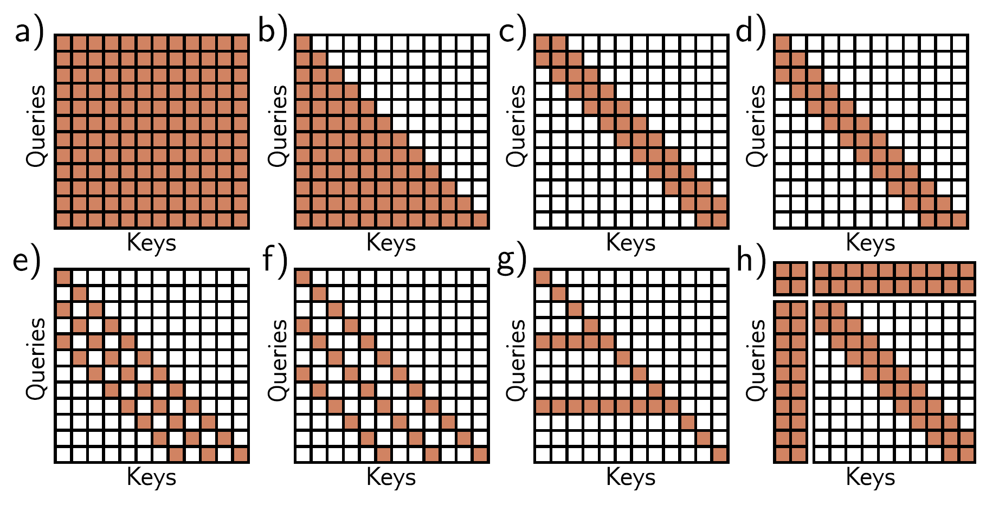

Report – Week 06: Transformers
Presenter: Fadi Dalbah
Date: 01.12.2025
Summary
1. Motivation
- Text as input
- Texts can be very long.
- Variable length: each text has a different number of inputs.
- Ambiguity: the meaning of a word depends strongly on its context.
- Goal: A mechanism that can flexibly relate any input to any other in the sequence and share parameters between similar inputs.
2. Self-Attention
- Think of self-attention as routing information:
- For each position, the model decides how much to take from each other position.
- $n^{th}$ output at position is the weighted sum of $N$ value vectors:
- Different outputs can use different weight distributions, i.e. focus on different parts of the sequence.
3.1 Values, queries and keys
- Each input token embedding $x_m$ is linearly mapped to a value: $$ v_m = \beta_v + \Omega_v x_m $$
- The same input is also mapped to a query and a key: $$ q_n = \beta_q + \Omega_q x_n $$ $$ k_m = \beta_k + \Omega_k x_m $$
3.2 Attention scores and weights
- Similarity score between token $m$ and position $n$ via dot product: $$ e_{mn} = k_m^T q_n $$
- Convert scores into attention weights with a softmax over $m$: $$ a[x_n, x_m] = \text{softmax}m(e{mn}) $$ $$ = \frac{\exp(e_{mn})}{\sum_{m'=1}^N \exp(e_{m'n})} $$
3.3 Output of self-attention
- Per position $n$: $$ \text{sa}n([x_1,\dots,x_N]) = \sum{m=1}^N a[x_m, x_n] \, v_m $$
- Matrix notation:
- Compute: $$ Q = \Beta_q1^T + \Omega_q X $$ $$ K = \Beta_q1^T + \Omega_k X $$ $$ V = \Beta_q1^T + \Omega_v X $$
- Basic self-attention: $$ \text{Sa}(X) = V \cdot \text{Softmax}(K^T Q) $$
4. Important Extensions of Self-Attention
4.1 Positional encoding
- Self-attention alone is order-invariant.
- Add a positional encoding to each token:
- $p_n$ can be:
- Absolute (depends on position index)
- Chosen or learned,
- Relative (depends on distances between positions),
4.2 Scaled dot-product attention
- In high dimensions, dot products can become large.
- This can cause:
- Largest value dominates softmax,
- Small gradient changes → harder training.
- Solution: scale the scores by query dimension $\sqrt{D_q}$: $$ \text{SA}(X) = V \cdot \text{Softmax}!\left(\frac{K^T Q}{\sqrt{D_q}}\right) $$
4.3 Multi-head attention
- Run multiple self-attentions in parallel:
- Each head $h$ has its own computation.
- Compute: $$ Q_h = \Beta_{vh}1^T + \Omega_{kh} X $$ $$ K_h = \Beta_{qh}1^T + \Omega_{kh} X $$ $$ V_h = \Beta_{kh}1^T + \Omega_{kh} X $$
- Concatenate and linearly transform: $$ \text{Sa}_h(X) = V_h \cdot \text{Softmax}!\left(\frac{K^T_h Q_h}{\sqrt{D_q}}\right) $$
- Can make network more robust to bad initializations
5. Transformers for NLP
5.1 Tokenization and embeddings
- Tokenization:
- Split text into subword tokens from a fixed vocabulary.
- Embedding:
- Each token index is mapped to a dense vector (word embedding).
5.2 Encoder-only model: BERT (example configuration)
- Input: full sentence → bidirectional self-attention.
- Typical configuration presented:
- Vocabulary: ~30 000 tokens.
- Embedding dimension: 1 024.
- 24 transformer layers, each with 16 heads.
- Query/key/value projections: $64 \times 1\,024$ per head.
- Feed-forward hidden dimension: 4 096.
- ≈ 340M parameters.
- For pretaining
- Inputs are converted to embeddings
- Passed through transformer layers
- Small fraction of tokens replaced with
<mask>token - Goal is to predict the right token
- For classification
<cls>token placed at the start of string- Token mapped to a number
6. Decoder-only Models and Masked Attention (GPT-3 style)
6.1 Autoregressive objective
- Model predicts the next token: $$ Pr(t_1, t_2, \dots, t_N) $$
- This defines a probability for the whole sequence: $$ Pr(t_1, t_2, \dots, t_N) = Pr(t_1)\prod_{n=2}^N Pr(t_n \mid t_1, \dots, t_{n-1}) $$
6.2 Masked self-attention
- During training, token at position $n$ must not see future tokens.
- Implemented by adding a mask matrix
- Entries with $-\infty$ become 0 after softmax.
6.3 Generating text
- Start with a special
<start>token. - Repeatedly:
- Compute distribution over next token via masked self-attention and output layer.
- Sample or choose the most probable token.
- Append it to the sequence and feed back into the decoder.
-
Stop when
<end>token is produced. -
Large decoder models support few-shot learning:
- A few examples in the prompt are enough to perform a new task without changing the model parameters.
7. Encoder–Decoder Transformers and Cross-Attention
- Encoder:
- Processes source sentence, producing context representations.
- Decoder:
- Uses:
- Masked self-attention over previous target tokens.
- Cross-attention over encoder states:
- Queries $Q$ from decoder embeddings,
- Keys $K$ and values $V$ from encoder outputs $E$.
-
Same scaled dot-product formula, just with different sources for $Q$ vs. $K, V$.
-
Main application: machine translation.
8. Variants
- Long-sequence transformers (efficient attention for long texts).
- Image transformer and ImageGPT (apply attention to image patches).
- Vision Transformer (ViT) and multi-scale ViT (hierarchical image representations).
- Many other adaptations to different data types and tasks.
Discussion Notes
Sampling Methods
When generating text from a Large Language Model we always try to predict the most likely token given the preceding text sequence. However, just outputting the token with the highest probability is not always the best option. For example, in a scenario, where the cumulative probability for a group of words that points in a similar direction is bigger than the cumulative probability for a group of words that points in a different direction, but the word with the biggest associated probability is from the second group and thus would be sampled and lead the generation in a wrong direction. This problem is also already known in other fields, like in elections, as Spoiler effect.
A common solution to tackle this problem is Top-k sampling. Here, instead of just always outputting the token with the highest probability, we sample from the k most likely tokens according to their probability. Another similar approach would be Top-p sampling, where $p$ is a probability, and we sample from the tokens with the biggest probability that cumulate to least $p$ of the total probability from all options. With for example Beam search there are also different approaches that keep track of sequences with the highest probabilities, and thus try to predict the optimal sequence of subsequent tokens.
Attention for long sequences
In attention, each token interacts with every other token from the sequence. This leads to a quadratic complexity of the attention mechanism, and thus the attention computation for very long sequences takes up a lot of resources. However, there are some methods developed to tackle this problem. Most approaches sparsify the attention interaction matrix for example through a convolutional structure (Fig. 1c-f). The tradeoff here, however, is that tokens can only interact with some of the other tokens through the course of several subsequent layers. This problem can be partially tackled by introducing some tokens that attend to all other tokens (Fig. 1g). 
Why are positional encodings added to the tokens and not concatenated with them?
Adding positional encodings keeps the dimensionality of the model smaller and makes it easier to alter already existing models, since the dimensionality does not have to change, while the model can still reasonably distinguish between positional and token information.
How big are modern Large Language Models (LLMs)?
Modern LLMs can have way more than a hundred billion parameters. Some of them even exceed the mark of a trillion parameters. For example Metas Llama 4 Maverick has a total of 400 billion parameters. In order to run this model with 16-bit floating point precision, you would need around 800 GB of GPU RAM.
Challenges of transformers in computer vision tasks
Images have a lot of pixels, which poses a problem, because the attention matrix grows quadratically with the number of inputs. Also, convolutional networks are particularly well suited for the two-dimensional structure of images. However, because of the massive number of training datapoints and the increase in compute resources transformer models have now eclipsed the performance of convolutional networks in many computer vision tasks.